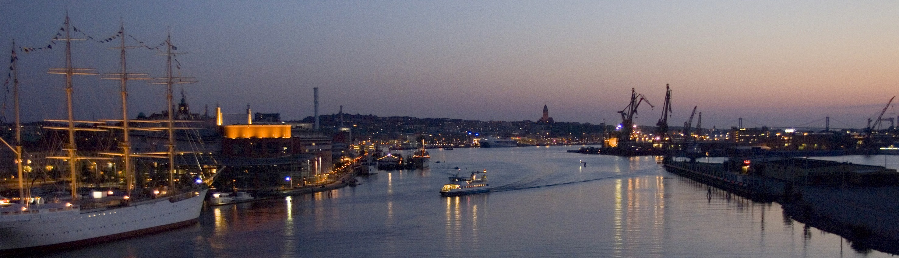
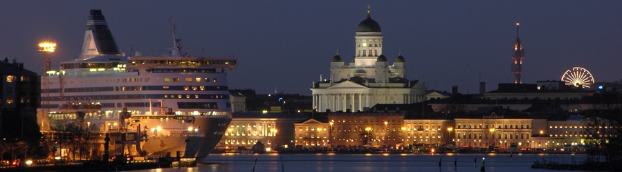
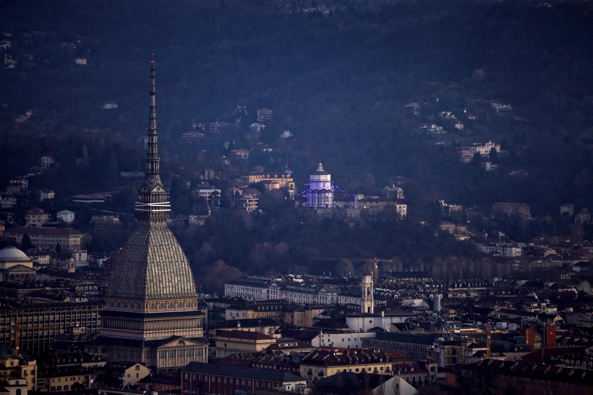
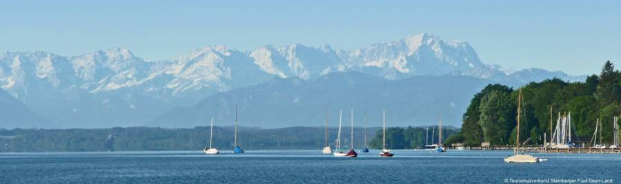
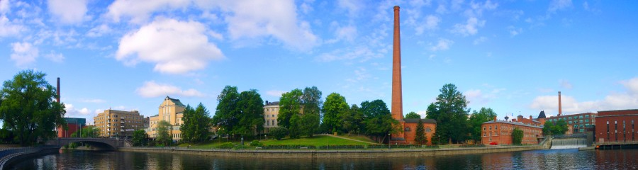

 2015, Gothenburg, Sweden General Chair Prof. Henk WymeerschChalmers University, Sweden  2014, Helsinki, Finland General Chair Prof. Jari NurmiTampere University of Technology, Finland  2013, Torino, Italy General Chair Prof. Fabio Dovis Politecnico di Torino, Italy  2012, Starnberg, Germany General Chair Dr. Sc. Stephan SandGerman Aerospace Center, Germany  2011, Tampere, Finland General Chair Prof. Jari NurmiTampere University of Technology, Finland